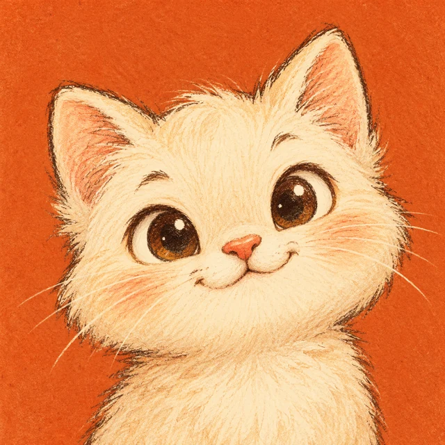

Read the signal
The planned Pinterest integration reads regional keyword trends, growth rates, and relative-interest history. Source dates and regions stay attached to each record.
AN INDEPENDENT CREATIVE WORKSPACE
A private workspace for researching keyword trends, reviewing visual ideas, and planning original cartoon avatars.
为原创卡通头像寻找有依据的灵感。
Explore the workflowLocal prototype · Pinterest API access pending

THE WORKFLOW
The planned Pinterest integration reads regional keyword trends, growth rates, and relative-interest history. Source dates and regions stay attached to each record.
The owner reviews visual characteristics, creator diversity, avatar crop suitability, and recognizable characters or trademarks before choosing a direction.
Eligible directions become briefs for AI-assisted original artwork. The local avatar tool pairs each original with a publishing preview for manual approval and export.
SCOPE & STATUS
lumina Avatar Trend Studio is operated by the owner of the GitHub account maxin12126-ops. It is currently a single-user local prototype, rather than a public account-connection service.
The intended use is to plan original cartoon avatars, including artwork offered for sale by the owner. There is no public store, payment flow, sign-in form, or upload form on this website.